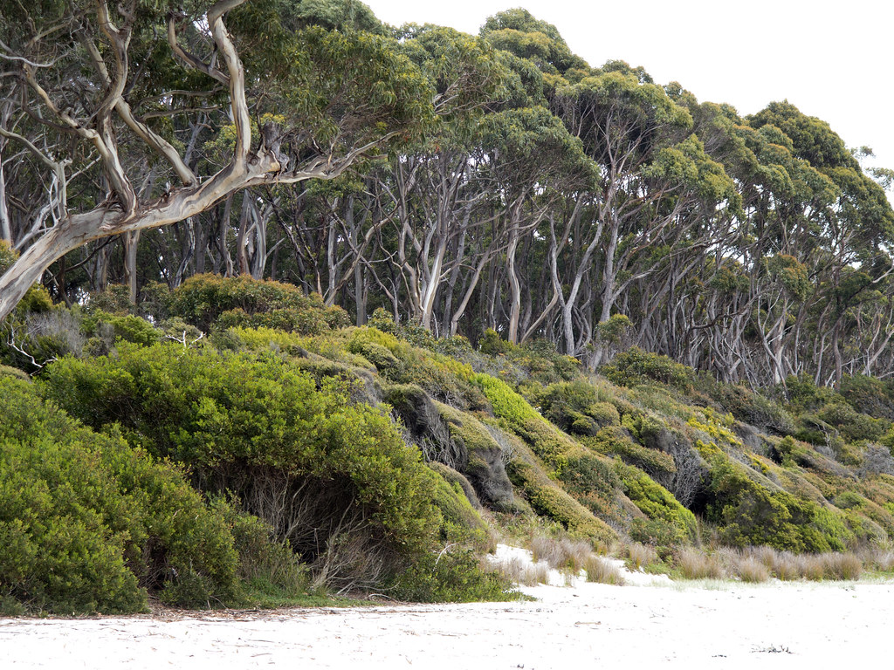
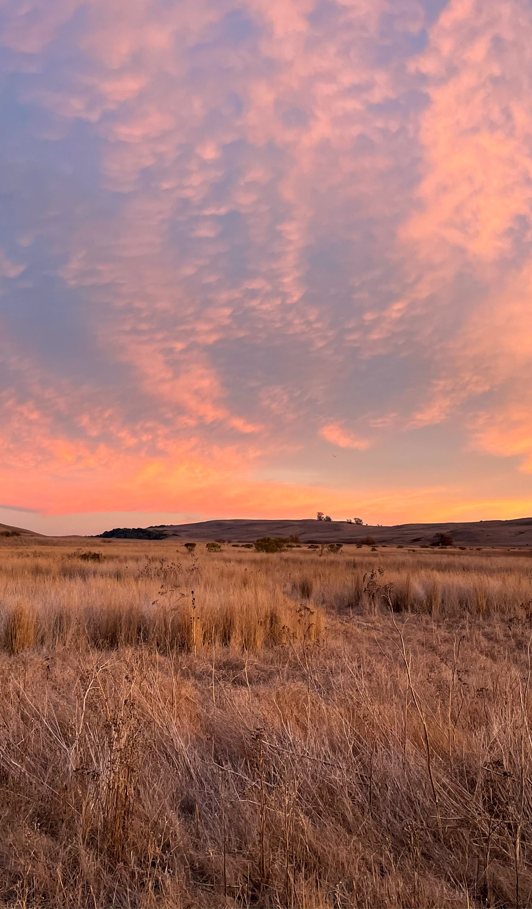

Spending time hiking and enjoying the outdoors made us want to protect it, especially after seeing our peers step up through local coastal clubs and summer nature camps. That community energy inspired us to build Snake Spot, a web platform that merges Louisiana wildlife education with a custom-built classic arcade game. Instead of just giving people an article to read, we decided to use the familiar, engaging format of "Snake" to grab attention. By integrating important environmental facts into a game that is genuinely fun to play, we hope to spark a wider interest in local conservation and show that anyone can get involved in saving our native ecosystems.
Images:
“Coastal forest, Tasman National Park, Tasmania” by GRID-Arendal, CC BY-NC-SA 2.0
“Northern Diamondback Water Snake (Nerodia rhombifer rhombifer)” by Greg Schechter, CC BY 2.0
“ribbon snake (Thamnophis sauritus)” by smashtonlee05, CC BY 2.0
“Diamondback Water Snake (Nerodia rhombifer)” by Peter Paplanus, CC BY 2.0
“Louisiana Prairie” by Justin Meissen, CC BY-SA 2.0
Not Images:
"Diamondback Water Snake." AnimalSpot, animalspot.net/diamondback-water-snake.html.
"Elliot's Short-Tailed Shrew." Animalia, animalia.bio/elliots-short-tailed-shrew.
"Exploring Louisiana Wildlife." Silent Voices Rehab, 9 Jan. 2024, silentvoicesrehab.org/news-events/tailsfromthewild.html/article/2024/01/09/exploring-louisiana-wildlife.
"Channel Catfish Fishing in Louisiana." OnWater, onwaterapp.com/us/species/louisiana/channel-catfish.
"Louisiana Gulf Coast Prairies and Marshes." The Nature Conservancy, nature.org/en-us/get-involved/how-to-help/places-we-protect/the-nature-conservancy-in-louisiana-gulf-coast-prairies-and-marshes/.
"Prairie Kingsnake." Louisiana Department of Wildlife and Fisheries, wlf.louisiana.gov/snake-species-field-guide/prairie-kingsnake.
"Southern Leopard Frog." Port Royal Sound Foundation, portroyalsoundfoundation.org/field-guide-post/southern-leopard-frog/.
"The Cajun Prairie." Louisiana Arboretum, friendslaarb.org/sites/default/files/sign_pdf/XF60%2032448%20JM%20%23131%20%20E_ARBO%20Habitat-Cajun%20Prairie-35x23.pdf.
"The Western Ribbon Snake." Snake Estate, snakeestate.com/garter-snakes/western-ribbon-snake/.
"Types of Wetlands." Loyola University New Orleans, lucec.loyno.edu/types-wetlands-americas-wetland.
